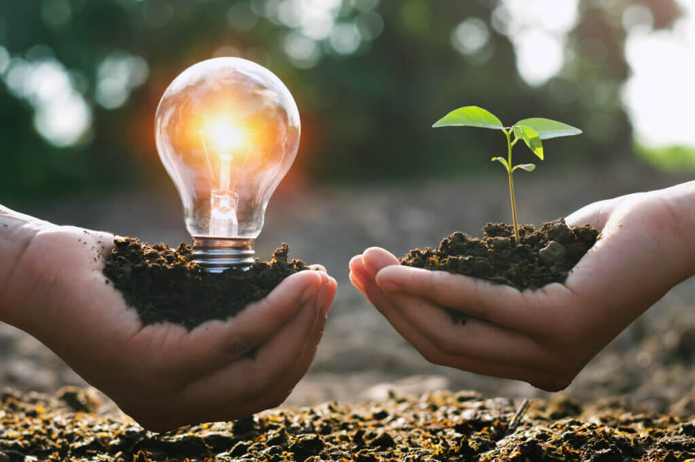

O desenvolvimento rural sustentável em áreas rurais envolve práticas que visam garantir o bem-estar das comunidades, a preservação dos recursos naturais e a manutenção da produtividade agrÃcola a longo prazo. Isso inclui a implementação de práticas agrÃcolas sustentáveis, a diversificação da economia rural, a promoção de polÃticas públicas que apoiem o desenvolvimento rural e a valorização da cultura e do conhecimento local.
A energia renovável pode ser utilizada tanto em áreas rurais como urbanas, com vantagens especÃficas para cada contexto. Em áreas rurais, a energia solar fotovoltaica e a energia eólica são comumente aplicadas para reduzir custos e garantir o acesso a eletricidade em locais remotos. Em áreas urbanas, a energia solar em telhados e painéis solares em construções podem ser usadas para gerar energia de forma sustentável, reduzindo a dependência de fontes fósseis. a energia renovável oferece diversos benefÃcios, como a redução de custos com energia elétrica, a proteção do meio ambiente, a diminuição das emissões de gases de efeito estufa e o aumento da segurança energética. No entanto, também existem desafios, como a necessidade de investimento inicial, a variabilidade de algumas fontes (como solar e eólica), a necessidade de infraestrutura de transmissão e a possÃvel interferência com a paisagem urbana.
A inclusão social e o bem-estar sustentável nas áreas urbanas e rurais envolvem a garantia de que todos tenham acesso a oportunidades e condições de vida dignas, ao mesmo tempo em que se promovem práticas que preservam o meio ambiente e garantem a sustentabilidade a longo prazo. Isso significa investir em infraestrutura, serviços básicos, educação, saúde e oportunidades de emprego, além de promover a participação social e a justiça social.A promoção de práticas agrÃcolas sustentáveis, a preservação da biodiversidade, o uso racional da água e a gestão adequada dos recursos naturais são fundamentais para a sustentabilidade rural. Garantir o acesso a uma educação de qualidade e a serviços de saúde para todos, especialmente para as crianças e jovens rurais, é crucial para o desenvolvimento do capital humano.
A agricultura sustentável é um sistema de produção de alimentos que busca conciliar a necessidade de alimentar a população com a preservação do meio ambiente, da economia e da sociedade, garantindo que as próximas gerações também possam ter acesso a recursos e alimentos. Isso significa adotar práticas agrÃcolas que minimizem os impactos negativos no ecossistema, como o uso de agrotóxicos, e que promovam a saúde do solo, a biodiversidade e a qualidade dos produtos. A agricultura sustentável é fundamental para garantir a segurança alimentar, proteger o meio ambiente e promover o desenvolvimento socioeconômico. Ao adotar práticas mais sustentáveis, é possÃvel garantir um futuro mais próspero e justo para todos.
O desenvolvimento sustentável em áreas urbanas e rurais enfrenta desafios como desigualdade social, poluição, falta de infraestrutura e adaptação à s mudanças climáticas, mas também oferece oportunidades como inovação tecnológica, energia renovável e gestão eficiente de recursos. Em áreas urbanas, a mobilidade, a gestão de resÃduos e a habitação são pontos crÃticos, enquanto em áreas rurais, a agricultura sustentável, a preservação ambiental e o acesso a serviços básicos são prioritários. O acesso limitado a água tratada e à coleta de esgoto é um problema crônico em muitas áreas. A garantia de acesso a serviços básicos, educação e oportunidades de emprego pode reduzir a desigualdade e melhorar a qualidade de vida e A transição para fontes de energia limpas, como solar e eólica, pode reduzir a poluição e aumentar a sustentabilidade.
Este é um blog que apresenta artigos de opinião sobre questões relevantes relacionadas à sustentabilidade em áreas rurais e urbanas,Oferecerecendo uma informções de como as pessoas podem adotar práticas mais sustentáveis em seu dia a dia.
Para dúvidas, sugestões ou mais informações, entre em contato conosco!